Discos
O ritual, em 3D.
Toca-discos, CD portátil e case. Vinil, CD, holográfico, picture disc e mais. A cena gira no BPM da faixa.
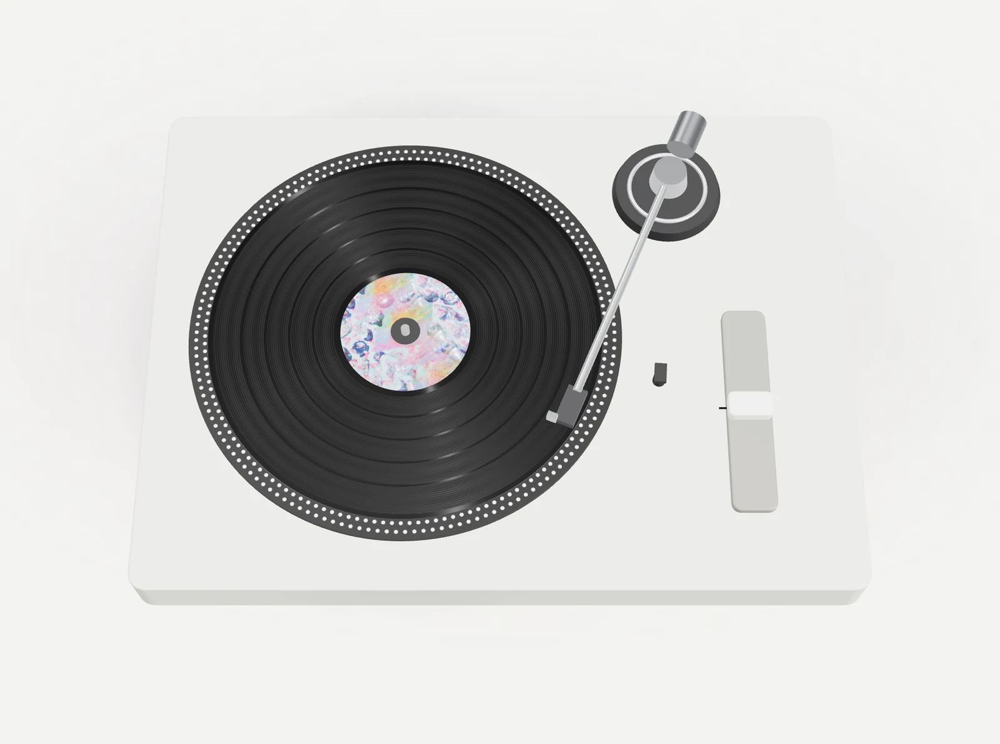
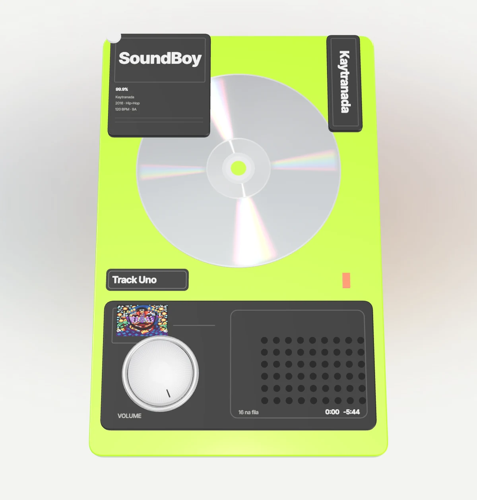
SoundBoy
Um player gratuito para os arquivos que estão no seu computador. Capas grandes, letras no tempo da música, discos em 3D e a cor de cada álbum na tela.
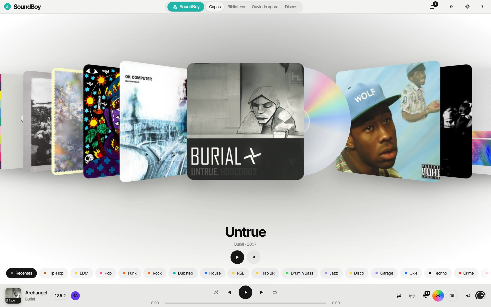
Ouvindo agora
O fundo pega as cores do disco que está tocando. Ao lado, a fila, a letra e as músicas relacionadas. Embaixo, BPM, tom e a qualidade do arquivo.
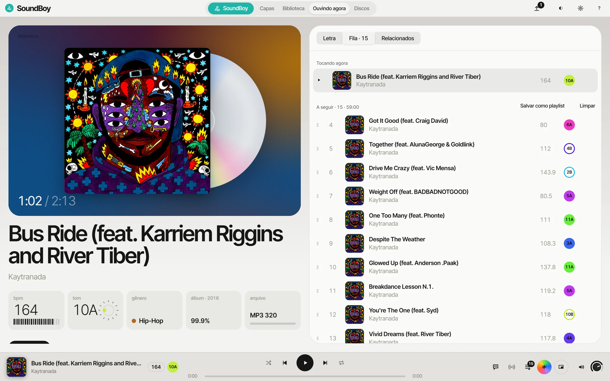
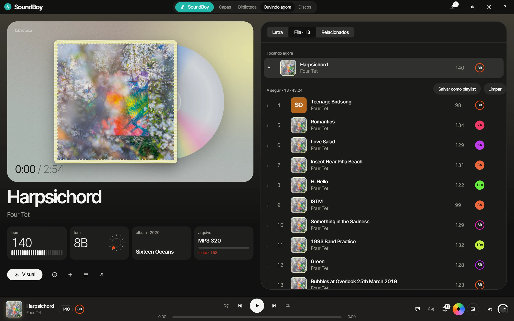
Mais jeitos de ouvir
Discos
Toca-discos, CD portátil e case. Vinil, CD, holográfico, picture disc e mais. A cena gira no BPM da faixa.


Letras
Letra sincronizada quando existe. Gravada no arquivo ou buscada na internet, você escolhe.
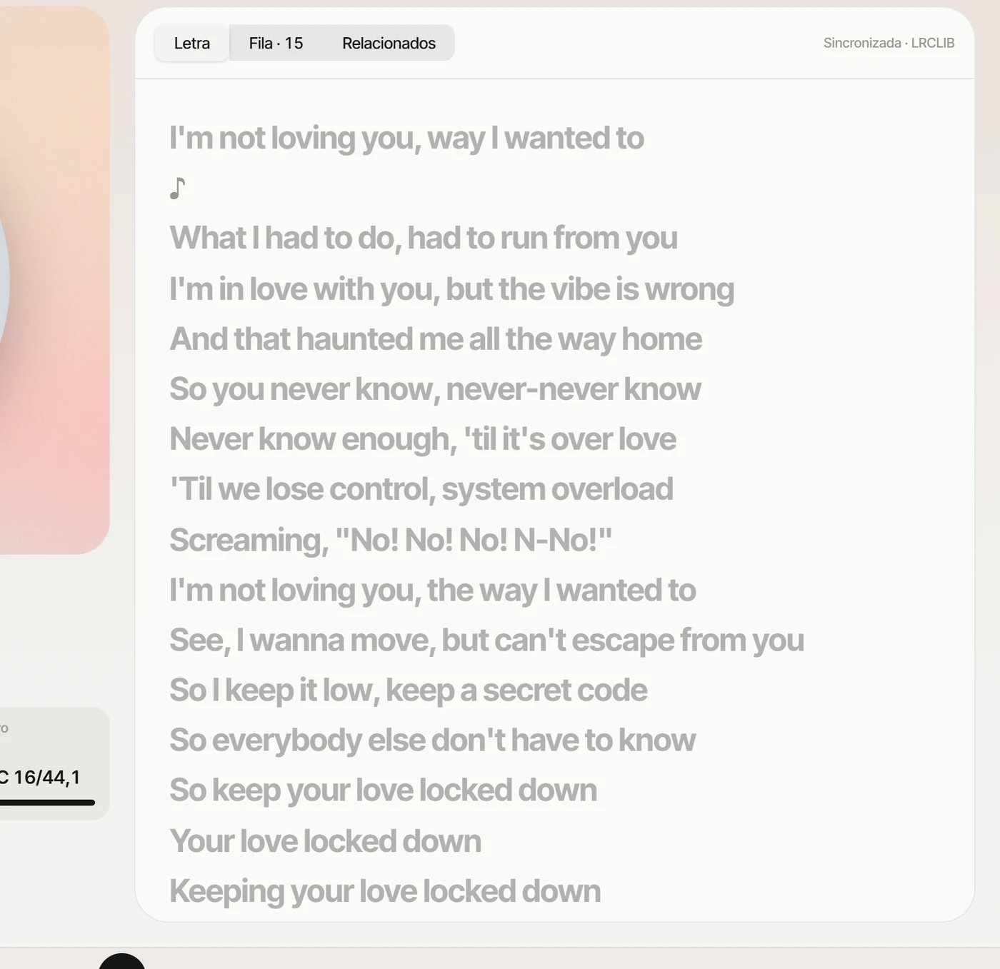
Tela cheia · tecla V
Sete visuais que reagem à música, com as cores da capa.
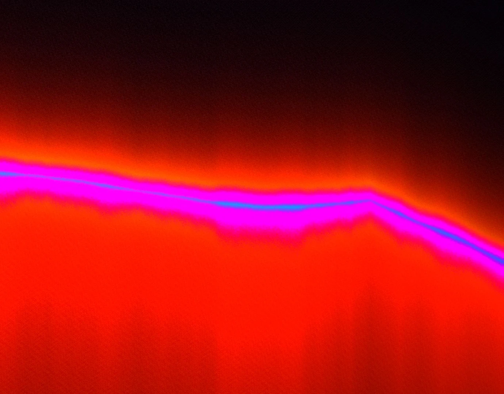
Miniplayer
Só a capa, uma barra de controles ou a letra inteira. Fica sobre as outras janelas enquanto você trabalha.
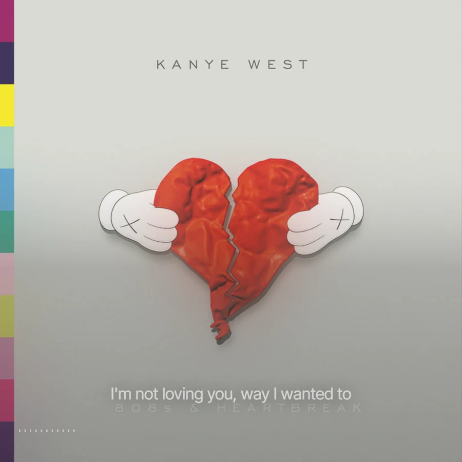
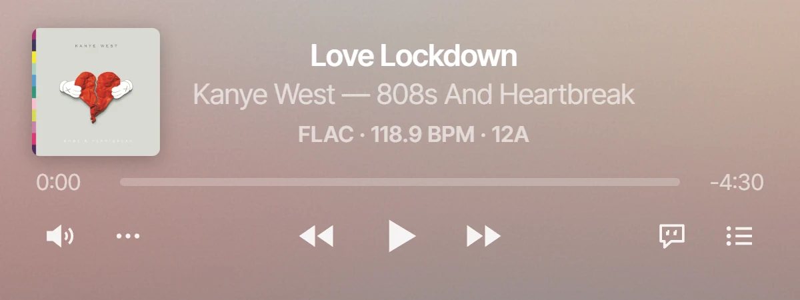
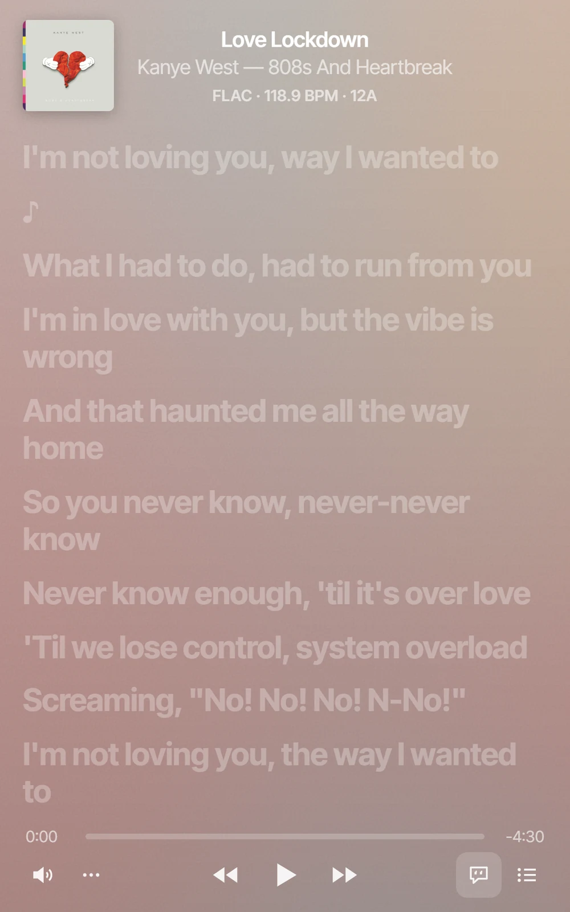
Artistas
Foto, história e as faixas que você mais toca. Álbuns, singles e participações separados, e você decide o que é oficial.
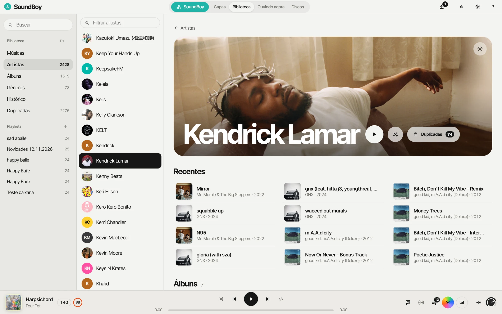
Liga a partir de uma faixa e segue com músicas da sua biblioteca que combinam em BPM e tom, sem repetir artista.
Ctrl + K acha faixa, artista, álbum, gênero ou playlist de qualquer tela.
O que tocou em cada dia, e os artistas e gêneros da semana.
Coleção em ordem
O SoundBoy acha as repetidas e mostra lado a lado. Ouça a prévia, escolha a versão que fica. WAV e FLAC vêm na frente. Nenhum arquivo é apagado.
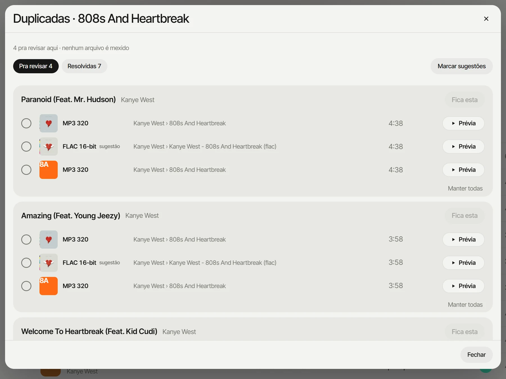
Ajustes
Tema claro, noturno ou automático. A cor do app, a intensidade da luz, as pastas que ele lê. E uma chave pra cada serviço da internet, ou nenhuma.
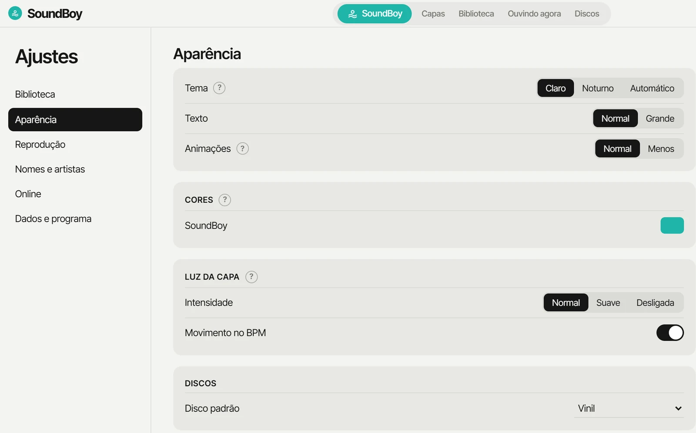
Abre e toca. Nada de cadastro, assinatura ou anúncio.
A música é sua e toca offline. A internet só busca extras, como letras e fotos.
O SoundBoy lê suas pastas. Não move, não renomeia, não apaga.
Não. Ele toca os arquivos de música que já estão no seu computador (MP3, WAV, FLAC, AIFF, M4A e OGG). Não tem catálogo, conta nem assinatura.
Não. Ao adicionar uma pasta, o SoundBoy só lê os arquivos. Nas duplicadas, você escolhe qual versão aparece nas listas; nenhum arquivo é apagado.
Sim. A música toca offline. A internet só serve pra buscar letras, fotos e informações dos artistas, e cada serviço pode ser desligado nos Ajustes.
Ele parte da faixa que está tocando e segue com músicas da sua biblioteca que combinam em BPM e tom, sem repetir o mesmo artista em seguida. Não traz música de fora.
Baixe o instalador e abra. Como a versão 0.9.1 ainda não tem assinatura digital, o Windows pode mostrar "O Windows protegeu o computador": clique em "Mais informações" e depois em "Executar assim mesmo". A instalação não pede administrador. Na primeira abertura, o SoundBoy procura as músicas do computador e você escolhe as pastas.
A versão para Mac está em preparação.